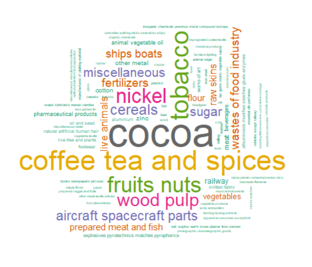
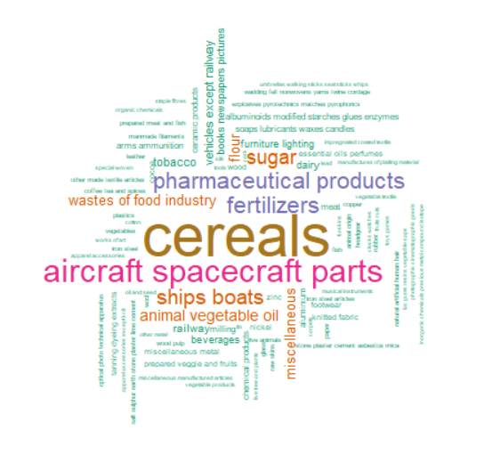

Over the past 30 years, Sub Saharan Africa's GDP growth has generally trended with the World.
However, rates were higher from 2001-2015, including a large spike in 2004.
The Financial Crisis of 2008 affected the region much less.
Sub Saharan Africa only contributes about 1-2% to World GDP.
That figure has increased slightly over the years, up to 2.1% in 2017.
For reference,
that figure is about the same as Canada’s contribution alone.
The static visualizations from an earlier version of the website are available for exploration here:
Figure 1: GDP Trends for Sub Saharan Africa and the World.
Also available here.
Source: World Bank Indicators NY.GDP.MKTP.KD.ZG , NY.GDP.MKTP.CD
Created with: R, Shiny
Access the data here.
The focus is on Sub-Saharan Africa, which includes all African countries except those in North Africa
(Egypt, Libya, Tunisia, Algeria, Morocco, Western Sahara and Cape Verde).
The Sub-Saharan countries are geographically located in southern part of Africa.
They contrast with North Africa, whose territories, languages, economic situations,
and cultures tend to be closer to the Middle East than the rest of Africa.
Throughout the exploration, countries are grouped by their income level.
These categories are assigned by the World Bank and are based on the country's 2017 classification.
Most countries in the region (27 out of 47) fall into the Low income category.
Geographically, countries in southern Africa are Upper middle income while more
central and landlocked countries are Low or Lower middle income.
The lone country designated as High income is Seychelles, a small island
country known for its tourism.
This page can serve as a reference throughout the visual exploration.
Hover over the map for statistics by country and use the year slider to explore changes over time.
Figure 2: Map of Sub Saharan Africa with economic indicators by year.
Also available here.
Source: World Bank
Created with: Tableau
Access the data here.
Employment and GDP appears to be most correlated among low income countries.
For middle income countries, the relationship is not as clear.
Though Africa has higher rates of employment, most of that employment is vulnerable,
as shown in the bar plots below.
Vulnerable employment includes those who are own account workers and
contributing family workers. Vulnerable employment is associated with lesser wages,
difficult working conditions, and less stability.
These types of workers would not be likely to have benefits
or union representation. This presents a challenge for Africa as it seeks sustainable economic growth.
Although vulnerable employment across the World has decreased, especially in the past 15 years,
it has not decreased in Sub-Saharan Africa.
Figure 3: Interactive plots for GDP and employment and vulnerable employment.
Also available here.
Source: World Bank indicator SL.EMP.TOTL.SP.ZS, modeled ILO estimate SL.EMP.VULN.ZS, modeled ILO estimate
Created with: R, Shiny
Access the data here.
Infrastructure development is a key driver for progress across the African continent and a critical
enabler for productivity and sustainable economic growth.
Africa’s weak physical infrastructure base was impeding the region's progress toward improved
living standards, poverty reduction, domestic and international trade and investment, and
socially inclusive GDP growth.
Across Sub Saharan Africa, high income and upper middle income countries invest a
higher proportion of GDP on infrastructure. The highest are Seychelles,
Botswana, and Cote d'Ivoire, which have well-established infrastructure
concentrated in certain areas to attract tourists from Europe and North America.
Over the past thirty years, the proportion has increased, especially in the 2006-2012 era.
Figure 4: Percent of GDP on Infrastructure/industry by year and by country.
Also available here.
Source: World Bank Indicator NV.IND.TOTL.ZS
Created with: Tableau
Access the data here.
Use the dropdown in the plot below to select a country to see its infrastructure index
change over time. Some countries, such as Angola, have a decreasing infrastructure index.
On the other hand, countries such as Ethiopia and Kenya have been increasing their infrastructure index.
Foreign Direct Investment (FDI), usually in the form of infrastructure projects, is related to the country's income level.
Based on 2016 figures, there is no clear relationship between FDI and Infrastructure with GDP,
which is shown in the size of the bubble. In some cases, high FDI % is related
to higher income countries, such as Gabon, and in other cases, it is related to low income countries, such as Mozambique.
Communications are a key part of a country’s infrastructure.
Sub-Saharan Africa has been developing its telecom sectors by increasing electricity,
internet and cellphone access. Electricity access grew across the region first, followed by internet, then cellphones.
Across the region, as of 2016, an average of 43% of the population has access to electricity.
Burundi has the lowest level at 8%, while the Seychelles has highest level at 100%.
Since 2000, levels have grown across all countries, though wide disparity remains.
Cellphone availability has grown rapidly, with most countries having over
100 subscriptions per 100 people. Notably, cellphone access does not differ
as much by the income level of the country.
Though internet access has grown across all countries since 2000, disparity remains.
In the average country, 20% of the population have access to the internet as of 2016.
Seychelles, Cabo Verde, South Africa, and Mauritius top the list.
Comparing the telecom indicators with GDP growth can reveal some modest correlations.
Test out different years for different indicators. In some cases, there appears to be a lag in
the effect - for example, setting Cellphones to 2014 and GDP Growth to 2017 reveals a somewhat
positive correlation.
South Africa is the region's largest trader, with the highest value of both imports and exports.
Ethiopia has increased its trade, especially from 2013 into 2014 and now is established
as one of the region's largest traders.
Press play to watch full timeline of trade in Sub Saharan Africa!
Figure 9: Trade flows showing value in USD for exports and imports by country and by year.
Based on a subset of Sub Saharan African countries, this is not a complete dataset.
Also available here.
Source: United Nations, Kaggle
Created with: R, networkD3, Shiny
Access the data here.
Some of the most valuable trade commodities in Sub Saharan Africa are
shown below in the word clouds, for which the size of the word indicates the value.
The most common imports are: cereal, medicine, aircraft and spacecraft parts, and ships.
On the other hand, the region is relying on traditional agricultural
exports such as: cocoa, coffee, tea, and tobacco.
Exports

Imports

Figure 10, 11: Word clouds for which the size of the word represents the 2016 trade amount in USD across all Sub Saharan African countries.
Also available here - export and
import.
Source: United Nations, Kaggle
Created with: R, networkD3, Shiny
Access the data here.
Health indicators can also be an important part of a country’s economic success.
In this section, the birth rate and access to contraception are considered.
Regardless of GDP growth, the figure illustrates a strong correlation among income level,
birth rate, and birth control availability for low income countries.
Middle income level countries display scattered distribution of birth rates and birth
control availability whereas low income countries show an extremely low rate of contraceptive
prevalence but high birth rate.
This may be interpreted as the fact that women still face high rates of economic inequality and
barriers to health services. These factors may raise their risk of having an unplanned
pregnancy or contracting HIV. Thus, ensuring better access to healthcare, education, and
opportunities to earn incomes would be critical for the improvement of increasing birth
control rate and possibly a country’s economic success.
(See this paper for
more information about women’s health in Africa)
The following map shows the birth rate by country along with other indicators of interest:
the country's access to internet and the country’s income level. Although there is variation
across the continent, in general, low birth rates appear correlated with the country's income level.
For example, South Africa has a low birth rate and is an upper middle income country while Niger
has a high birth rate and is a low income country.
This visual narrative has explored many relationships.
Though it is not clear which matter most - employment, infrastructure,
internet access, access to contraceptives - it is clear that they all can be important in
determining a country's economic success.
Admittedly, some context has been left out - war, culture, religion - but the hope is
that this visual exploration provides the first step in establishing smart policy and aid.
Please reach out with questions!
Kendra, RD, Sooeun
Download our code and data
All scripts used in this project can be accessed below. Note that visualizations created in Tableau (maps, area chart, bubble chart)
will not be included in these files.
Viz Creation Files
part_2_plot_r_plotly.R - Creates the Plotly bubble chart in the Infrastructure section
part_2_plot_leaflet.R - Creates the Bokeh bar and scatter plots in the Telecom section
part_2_plot_bokeh.ipynb - Creates the rotatable 3D plot in the Birth Rate section
part_2_plot_3D.R - Creates the word clouds in the Trade section
part_2_plot_wordclouds.R - Creates the Plotly dropdown in the Infrastructure section
part2_Shiny_Sankey_Exploration.R - Exploratory analysis for Shiny Web Apps
tss_wld_gdp , tss_trade, tss_employment - Shiny app folders, includes data